STATUS:
rosiec@malp:/Arcturus/home/rosiec/research/devolab_research/evolution_of_modularity/raw_data/082/SEPARATED$ for i in *_??????; do echo $i; cd $i; python ../../../../../scripts/analysis/extract_last_common_ancestor.py data/lineage.dat data/stats.dat > last_common_ancestor.dat ; cd ../; done
rosiec@malp:/Arcturus/home/rosiec/research/devolab_research/evolution_of_modularity/raw_data/082/SEPARATED$ for i in *_??????; do echo $i; cd $i; python ../../../../../scripts/analysis/generate_analyze_mode_files_for_map_mutations.py last_common_ancestor.dat > analyze__map_mutations_last_common_ancestor.cfg ; cd ../; done
caninoko@dev-intel07:~/evolution_of_modularity/084_Map_Mutations/config_testing$ ./avida -a -set ANALYZE_FILE analyze__map_mutations_last_common_ancestor.cfg
rosiec@malp:/Arcturus/home/rosiec/research/devolab_research/evolution_of_modularity/raw_data/082/SEPARATED$ python ../../../../scripts/analysis/generate_analyze_mode_files_for_map_mutations.py control_separated_??????/last_common_ancestor.dat > analyze__map_mutations_last_common_ancestor__control_separated.cfg
STATUS:
caninoko@dev-intel07:~/evolution_of_modularity/084_Map_Mutations/config_ci$ ./avida -a -set ANALYZE_FILE analyze__map_mutations_last_common_ancestor__c*_i*.cfg -set EVENT_FILE events_c*_i*.cfg
rosiec@atlantis:~/research/devolab_research/evolution_of_modularity/raw_data/082/INTERTWINED/last_common_ancestor_mutation_landscapes/control_intertwined$ rm mutation_landscape_metrics.csv ; for i in {0..50}; do python ../../../../../../scripts/analysis/extract_mutation_landscape_metrics.py ancestor_$i".dat" mutations_$i"_all__data_only.dat" >> mutation_landscape_metrics.csv ; done
rosiec@caninoko-2:/Volumes/rosiec/research/devolab_research/evolution_of_modularity/raw_data/082/SEPARATED/last_common_ancestor_mutation_landscapes$ python ../../../../../scripts/graph_generation/bar_chart_from_csv.py --ylim 1 --groups 3 --xticks "Control,No Reward,Punish" --legend "FracViable,FracDoesTask1,FracDoesTask2,FracDoesBoth,FracChangedTask1,FracChangedTask2,FracChangedBoth" --pair --title "Mutation Landscape - Separated Ancestor" --ylabel "Fraction" --xlabel "Treatment" --separator "," mut_metrics.png control_*/mutation_landscape_metrics.csv noreward_*/mutation_landscape_metrics.csv punish_*/mutation_landscape_metrics.csv; rosiec@caninoko-2:/Volumes/rosiec/research/devolab_research/evolution_of_modularity/raw_data/082/INTERTWINED/last_common_ancestor_mutation_landscapes$ python ../../../../../scripts/graph_generation/bar_chart_from_csv.py --ylim 1 --groups 3 --xticks "Control,No Reward,Punish" --legend "FracViable,FracDoesTask1,FracDoesTask2,FracDoesBoth,FracChangedTask1,FracChangedTask2,FracChangedBoth" --pair --title "Mutation Landscape - Intertwined Ancestor" --ylabel "Fraction" --xlabel "Treatment" --separator "," mut_metrics.png control_*/mutation_landscape_metrics.csv noreward_*/mutation_landscape_metrics.csv punish_*/mutation_landscape_metrics.csv;
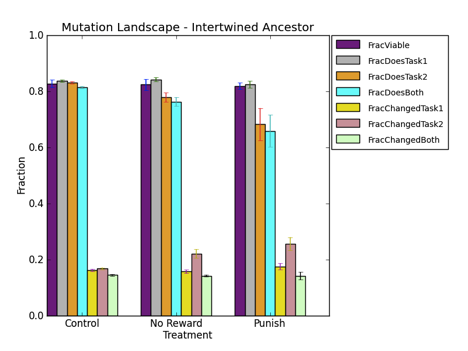
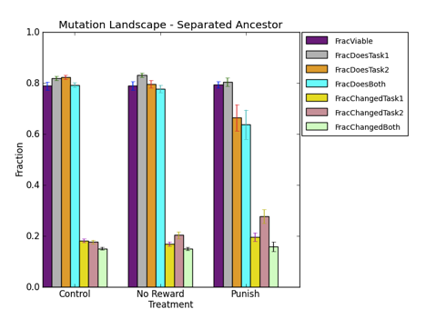
OFRIA LAB MEETING NOTES:
STATUS:
rosiec@malp:/Arcturus/home/rosiec/research/devolab_research/evolution_of_modularity/raw_data/082/INTERTWINED/last_common_ancestor_mutation_landscapes$ python ../../../../../scripts/graph_generation/bar_chart_from_csv.py --groups 3 --xticks "Control,No Reward,Punish" --columns "5,6,7" --legend "FracChangedTask1,FracChangedTask2,FracChangedBoth" --pair --title "Mutation Landscape" --ylabel "Fraction" --xlabel "Treatment" --separator "," --ylim 1 mut_metrics.png control_intertwined/mutation_landscape_metrics.csv noreward_intertwined/mutation_landscape_metrics.csv punish_intertwined/mutation_landscape_metrics.csv
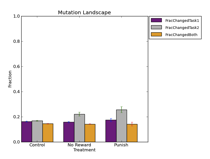
rosiec@George-Hammond:~$ ssh -X malp
rosiec@malp:/Arcturus/home/rosiec/research/devolab_research/evolution_of_modularity/raw_data/082/INTERTWINED/last_common_ancestor_mutation_landscapes$ python ../../../../../scripts/graph_generation/bar_chart_from_csv.py --groups 3 --xticks "Control,No Reward,Punish" --legend "frac_viable,frac_does_task1,frac_does_task2,frac_does_both,frac_changed_task1,frac_changed_task2,frac_changed_both,frac_gained_task1,frac_gained_task2,frac_gained_both,frac_lost_task1,frac_lost_task2,frac_lost_both,frac_gained_task1_lost_task2,frac_lost_task1_gained_task2" --pair --title "Mutation Landscape" --ylabel "Fraction" --xlabel "Treatment" --separator "," --ylim 1 mut_metrics.png control_intertwined/mutation_landscape_metrics.csv noreward_intertwined/mutation_landscape_metrics.csv punish_intertwined/mutation_landscape_metrics.csv
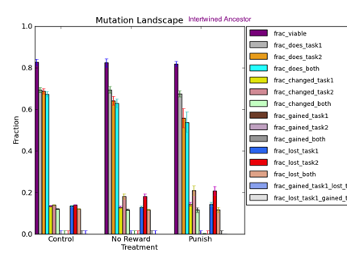
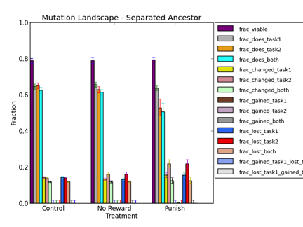
rosiec@malp:/Arcturus/home/rosiec/research/devolab_research/evolution_of_modularity/raw_data/082/SEPARATED/last_common_ancestor_mutation_landscapes$ python ../../../../../scripts/graph_generation/bar_chart_from_csv.py --groups 3 --xticks "Control,No Reward,Punish" --columns "10,11" --legend "%DoXor,%DoEqu" --pair --title "Task Performance by Last Common Ancestor - Separated" --ylabel "% Performing Task" --xlabel "Treatment" --separator " " --ylim 1 task_performance.png control*/ancestors_all.dat noreward_*/ancestors_all.dat punish_*/ancestors_all.dat
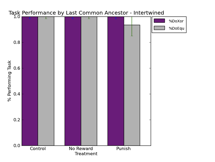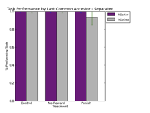
rosiec@atlantis:~/research/devolab_research/evolution_of_modularity/raw_data/082/INTERTWINED$ for i in *_??????; do echo $i; cd $i; python ../../../../../scripts/analysis/extract_last_common_ancestor.py --ancestor_without_fluct data/lineage.dat data/stats.dat > last_common_ancestor__without_fluct.dat ; cd ../; done rosiec@atlantis:~/research/devolab_research/evolution_of_modularity/raw_data/082/INTERTWINED$ python ../../../../scripts/analysis/generate_analyze_mode_files_for_map_mutations.py n*_??????/last_common_ancestor__without_fluct.dat > analyze__map_mutations_last_common_ancestor__without_fluct__noreward_separated.cfg
caninoko@dev-intel07:~/evolution_of_modularity/084_Map_Mutations/config_nofluct_ni$ ./avida -a -set ANALYZE_FILE analyze__map_mutations_last_common_ancestor__w*__n*_i*.cfg -set EVENT_FILE events_n*_i*.cfg
STATUS:
rosiec@atlantis:~/research/devolab_research/evolution_of_modularity/raw_data/082/INTERTWINED/last_common_ancestor_mutation_landscapes__nofluct/punish_intertwined$ for i in mutations_?; do echo $i; cat $i/*.dat > $i"_all.dat"; done rosiec@atlantis:~/research/devolab_research/evolution_of_modularity/raw_data/082/INTERTWINED/last_common_ancestor_mutation_landscapes__nofluct/punish_intertwined$ for i in mutations_??; do echo $i; cat $i/*.dat > $i"_all.dat"; done rosiec@atlantis:~/research/devolab_research/evolution_of_modularity/raw_data/082/INTERTWINED/last_common_ancestor_mutation_landscapes__nofluct/punish_intertwined$ for i in mutations_*_all.dat; do cat $i | grep ^[0-9] > $i"_data_only.dat" ; done rosiec@atlantis:~/research/devolab_research/evolution_of_modularity/raw_data/082/INTERTWINED$ for i in punish_*_??????/*without_fluct.dat ; do val=`wc -l $i | cut -f1 -d' '`; if [ $val -gt 0 ] ; then echo $i ; fi ; done | xargs rosiec@atlantis:~/research/devolab_research/evolution_of_modularity/raw_data/082/INTERTWINED$ files=( ...whatever the output of the prev command was ...) rosiec@atlantis:~/research/devolab_research/evolution_of_modularity/raw_data/082/INTERTWINED$ for i in {0..50} ; do cp ${files[i]} last_common_ancestor_mutation_landscapes__nofluct/punish_intertwined/ancestor_$i.dat ; done
rosiec@atlantis:~/research/devolab_research/evolution_of_modularity/raw_data/082/INTERTWINED/last_common_ancestor_mutation_landscapes__nofluct/noreward_intertwined$ rm mutation_landscape_metrics.csv ; for i in {0..50}; do python ../../../../../../scripts/analysis/extract_mutation_landscape_metrics.py ancestor_$i".dat" mutations_$i"_all.dat_data_only.dat" >> mutation_landscape_metrics.csv ; done
rosiec@caninoko-2:/Volumes/rosiec/research/devolab_research/evolution_of_modularity/raw_data/082/INTERTWINED/last_common_ancestor_mutation_landscapes__nofluct $ python ../../../../../scripts/graph_generation/bar_chart_from_csv.py --groups 2 --xticks "Control,No Reward" --columns "10,11" --legend "%DoXor,%DoEqu" --pair --title "Task Performance by Last Common Ancestor - Intertwined" --ylabel "% Performing Task" --xlabel "Treatment" --separator " " --ylim 1 task_performance.png noreward_*/ancestors_all.dat punish_*/ancestors_all.dat; rosiec@caninoko-2:/Volumes/rosiec/research/devolab_research/evolution_of_modularity/raw_data/082/INTERTWINED/last_common_ancestor_mutation_landscapes__nofluct$ python ../../../../../scripts/graph_generation/bar_chart_from_csv.py --groups 2 --xticks "No Reward,Punish" --legend "frac_viable,frac_does_task1,frac_does_task2,frac_does_both,frac_changed_task1,frac_changed_task2,frac_changed_both,frac_gained_task1,frac_gained_task2,frac_gained_both,frac_lost_task1,frac_lost_task2,frac_lost_both,frac_gained_task1_lost_task2,frac_lost_task1_gained_task2" --pair --title "Mutation Landscape" --ylabel "Fraction" --xlabel "Treatment" --separator "," --ylim 1 mut_metrics__nofluct.png noreward_*/mutation_landscape_metrics.csv punish_*/mutation_landscape_metrics.csv
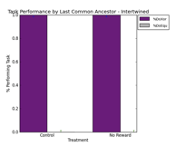 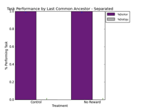
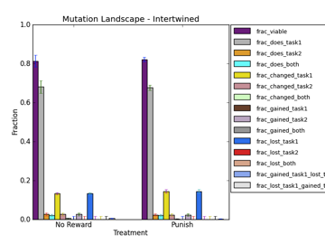
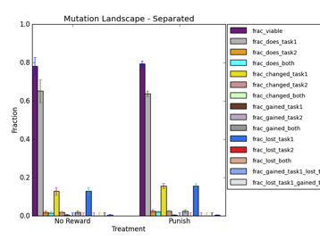
WEEKLY SUMMARY – Week of 4/23/12:
- Evolution of Modularity project
- Extracted last common ancestors from each replicate of each treatment (control, no-reward, and punish; intertwined and separated), and surveyed the functional (task) landscape out to one mutational step away.
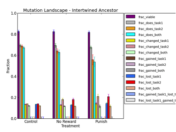
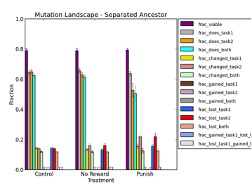
- Of interest is the fraction of in the punishment treatment mutants that lost task2 (red bar) with a single mutation, as compared to no-reward and control.
- Also notice that in the punishment treatments there is a small blip in fraction of mutants that gained the fluctuating task from a single mutation. That is because not quite all the final common ancestors actually performed the fluctuating task, therefore for some replicates, the task was there to be gained.
- Regardless, is to be expected that it would be easier to lose a task rather than gain it. To that end, I extracted the last common ancestor that did NOT do the fluctuating task from the final common lineage, and performed the same functional landscaping.
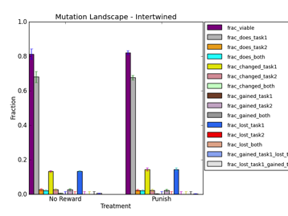
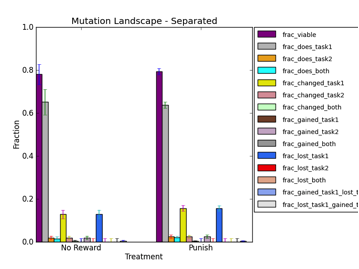
- Note that there is no control in these graphs. This is because under the control, there was no ancestor in the common ancestor line that did not perform the fluctuating task.
- Of interest is the fraction of mutants that gained task2 (fluctuating) (purply pink two left of the bright blue). Both no-reward and punish both show a small blip, but they are not significantly different from each other. In any case, in order to get a semi-conclusive result, I’ll need to produce a control-evolved organism that does not do the fluctuating task (see plans for this week).
- Spent Friday, Saturday, and Sunday manning the SSE booth at the USA Science Festival.
NEXT WEEK PLANS:
- Evo of Modularity project
- Create control organisms to compare mutation landscape and perform landscaping.
- Take both-task-performing organism from ech control run, and remove reward for fluctuating task for half a cycle.
- For e.coli switching environments experiments
- Perform relative fitness tournaments (see Notes from Devolab Mtg 4/30/12)